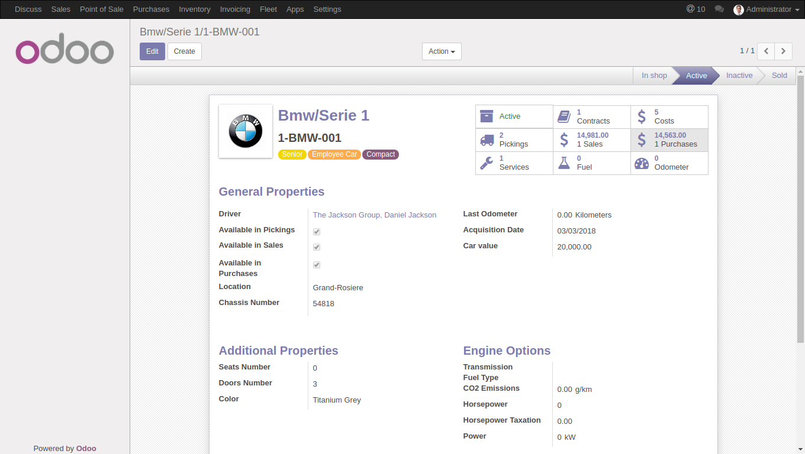
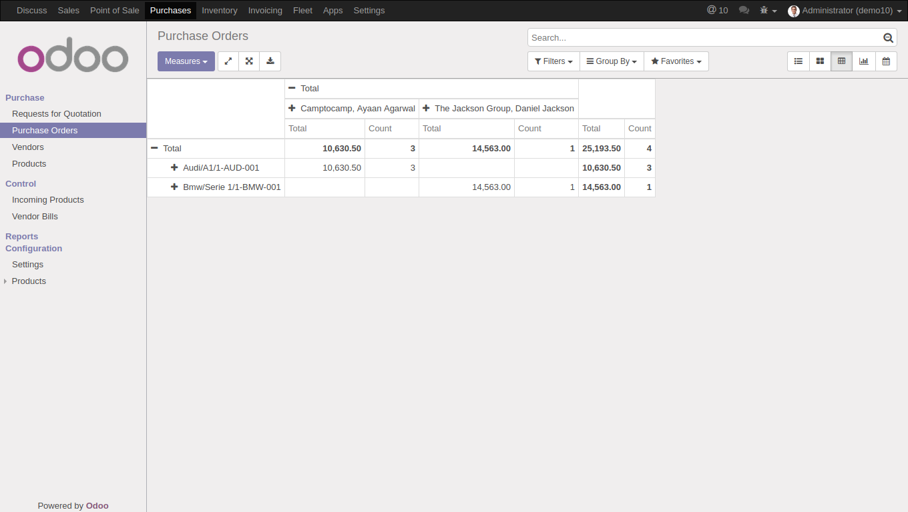
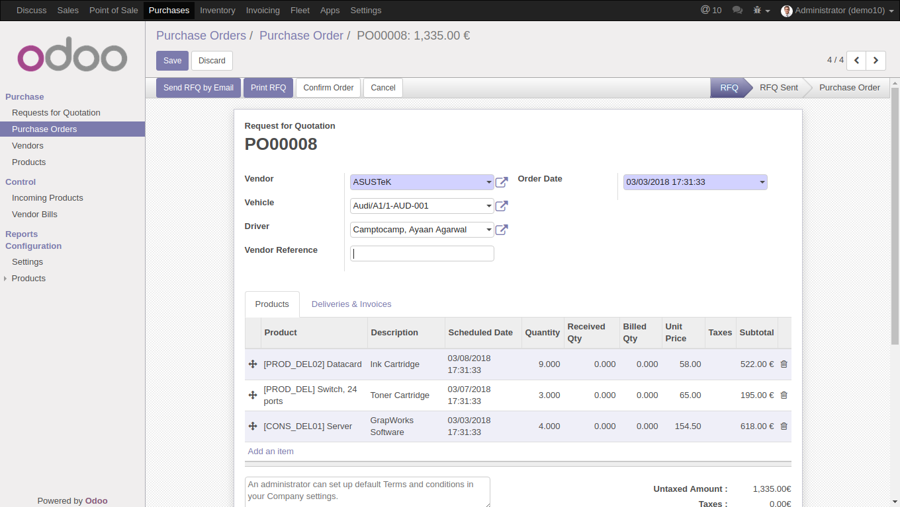

Link your Purchases with your Fleet
You can set for each vehicle if it's available as a transportation method in purchases

Get better statistics regarding your fleet purchases performance
you can now filter and / or group your purchases per vehicle and driver

Assign a purchase order to a vehicle
You can choose which vehicle will be used in a purchase order, the system will automatically get the assigned driver, which can be modified if needed.
